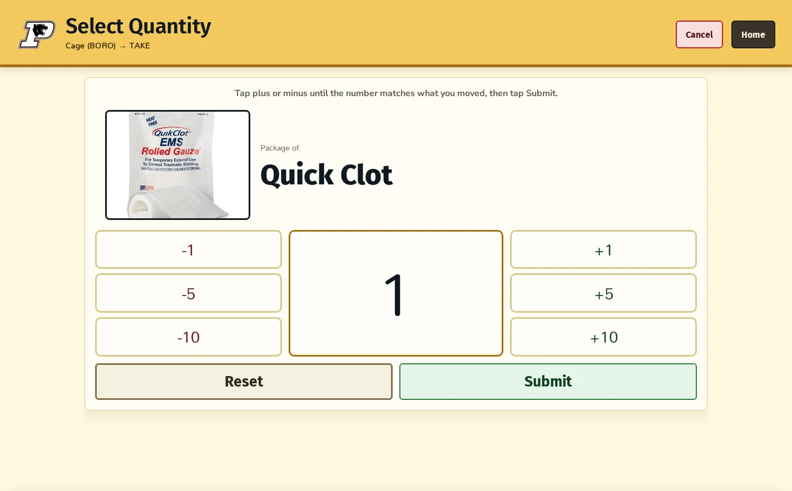
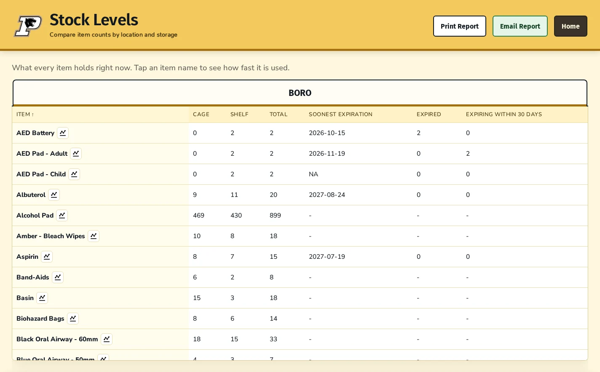
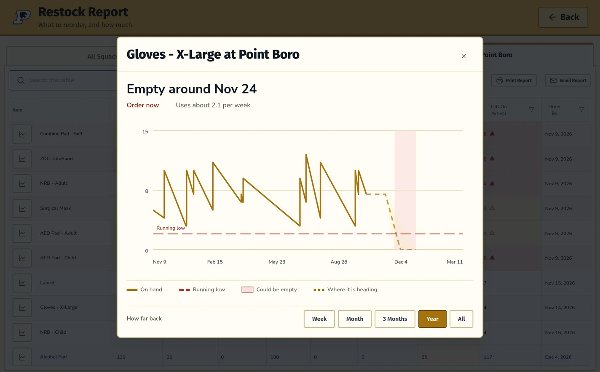
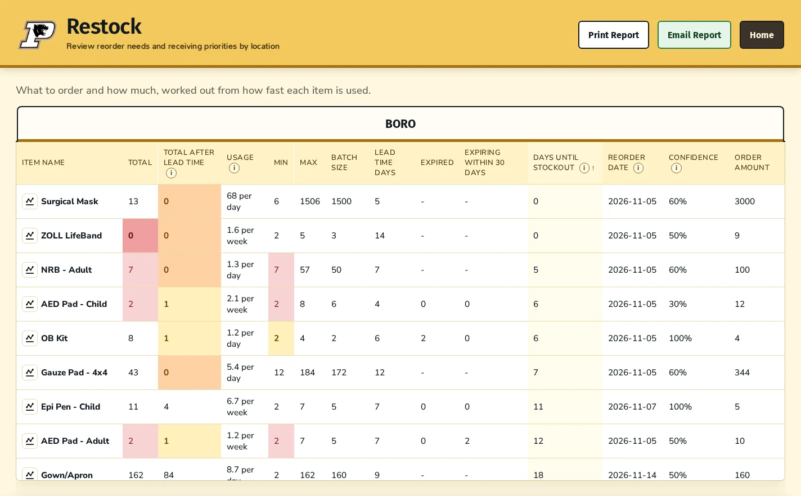

EMS supply inventory software
Inventory tracking for the rigs, stations, and supply rooms your team runs on.
Inventory IQ records supply usage as it happens, tracks stock by item and storage location, watches par levels and expiration dates, and plans restock from real usage history. It was shaped around EMS and fire-service stations, and the approach works anywhere a team runs physical inventory.
See it with your own inventory list. No commitment.

The problem
Know what is below par before the supply room is empty.
When inventory lives in spreadsheets, paper logs, or people's memory, it is difficult to see what has been used, what is expiring, and what needs to be reordered. Inventory IQ brings those details into one place so teams can make more informed decisions.
How it works
A clearer inventory picture, step by step.
-
Record activity
Log items as they are added or used, including through the available scanning workflow.
-
Update inventory
Keep quantities organized by item, rig, and storage location.
-
Monitor important details
Review stock levels against par and expiration dates to spot items that need attention.
-
Plan ahead
Use recorded usage to estimate what to reorder and when to restock.
Scanning looks up an item by its barcode and opens the quantity screen; a person still confirms what moved before it is recorded.
Features
What you can see and do inside Inventory IQ.
Stock by item, location, and expiration date
See recorded quantities across inventory locations and storage areas, identify low or depleted items, and read the soonest expiration date for an item alongside the counts that have already expired or expire soon.

Usage history for a single item
Open any item to see its recorded counts, additions, and removals plotted over time, with the usage rate it works out and how confident that estimate is. Treat the projection as planning support rather than a guaranteed date.

Restock reporting
The restock view brings each item's total, usage rate, minimum and maximum levels, batch size, lead time, expired and expiring counts, estimated days until stockout, a suggested reorder date, and a suggested order amount into one table you can print or email.

Email alerts
Choose who hears about what. Inventory IQ can email chosen recipients when an item is out of stock, low, projected to run low, overdue for a count, expired, or expiring soon, and when a scanned barcode does not match any item on file.
- Out of stock and low stock
- Projected to run out or run low
- Counts that have gone stale
- Expired and expiring-soon stock
- Unrecognized barcodes
Who it's for
Built around EMS workflows. Open to any team that stores supplies.
Inventory IQ is being piloted in an EMS and first aid squad setting, across rigs, station supply rooms, and restock cabinets. Nothing about it is EMS-only. The same approach suits fire departments, clinics, municipal teams, warehouses, schools, and any organization that stores and restocks physical supplies.
Bring your own item categories, storage locations, and the way your team actually works to a demo, and we can walk through how they would be set up.
- EMS agencies and first aid squads
- Fire departments
- Clinics and medical offices
- Municipal and public-service teams
- Warehouses and distribution
- Schools, shops, and any team with a stockroom
The crew picked it up without a training session. That matters more than any feature to me. If it is harder than the clipboard, nobody uses it, and we have been down that road before.
Common questions
What people ask before a demo.
Does it replace our paper restock sheets?
Yes. A crew member scans an item barcode and confirms the quantity that moved, so the count updates as supplies are used instead of at the end of a shift.
Can we set par levels per item?
Each item carries a minimum and maximum quantity. Inventory IQ flags anything below its minimum and emails an alert so a restock happens before a rig goes out short.
Does it track expiration dates?
Stock is tracked by item, storage location, and expiration date, so a near-dated box in one supply room does not hide behind fresher stock somewhere else.
Will it tell us when to reorder?
Restock reporting uses recorded usage to estimate a reorder amount and a suggested reorder date per item, plus days until stockout.
Does it handle controlled substances?
No. Inventory IQ tracks general medical and station supplies. It does not provide the custody logging or witness signatures a controlled-substance program requires.
We are not an EMS agency. Does it still fit?
Yes. Items, storage locations, and par levels are yours to define, so a warehouse shelf or a school stockroom works the same way a rig does. Bring your own list to a demo and we can walk through the setup before you commit to anything.
Request a demo
See Inventory IQ with your own supplies.
Request a walkthrough and we can use examples from your inventory to show how Inventory IQ may fit your workflow. Tell me what your organization tracks and what you would like to improve.
Prefer email? Write to hello@priorityonetechnologies.com.